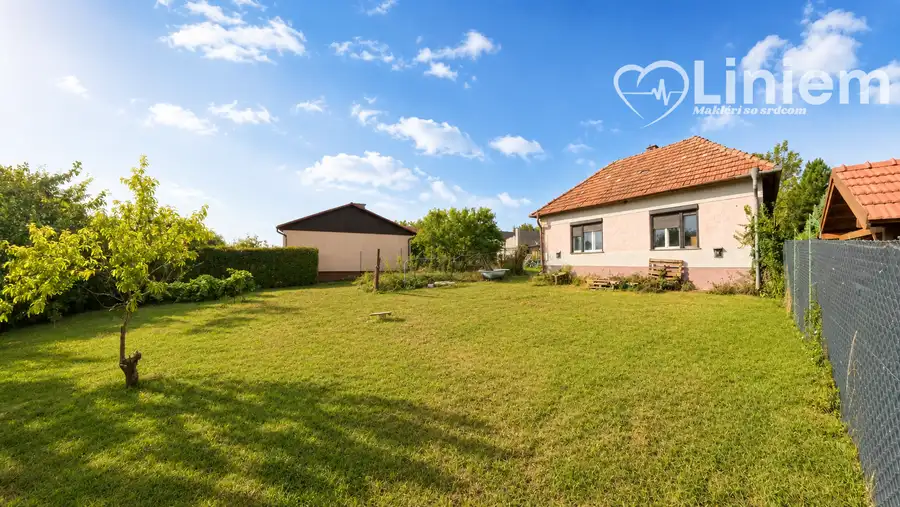
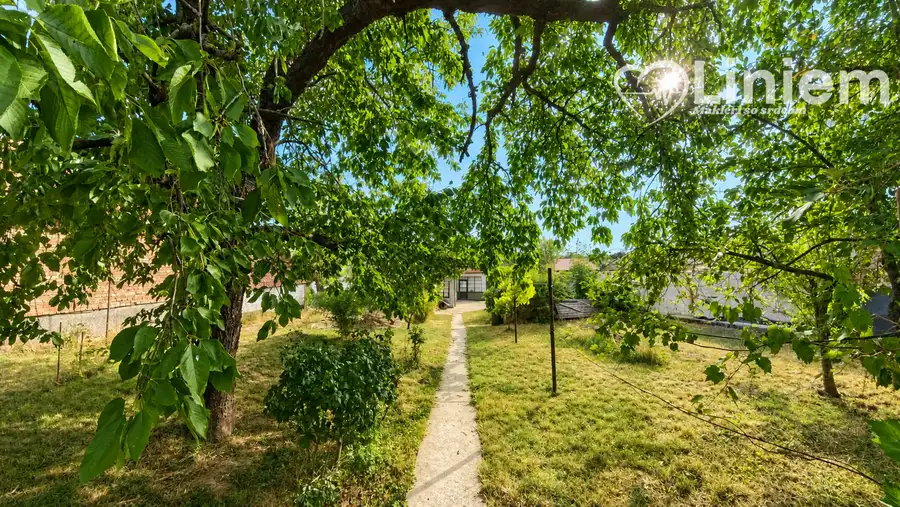
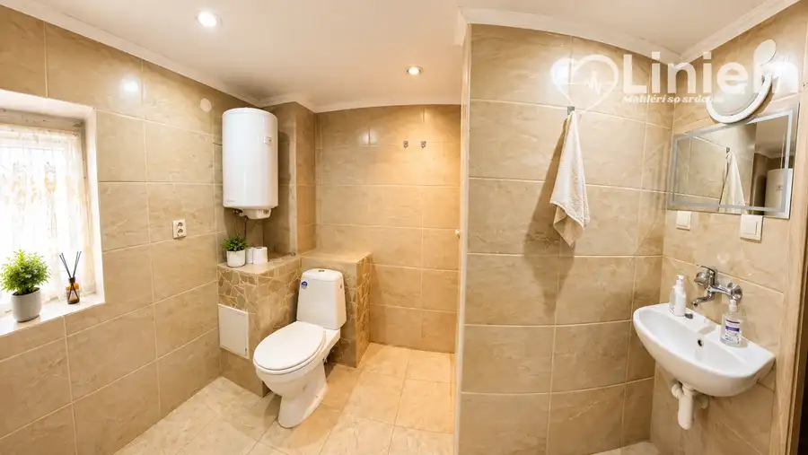
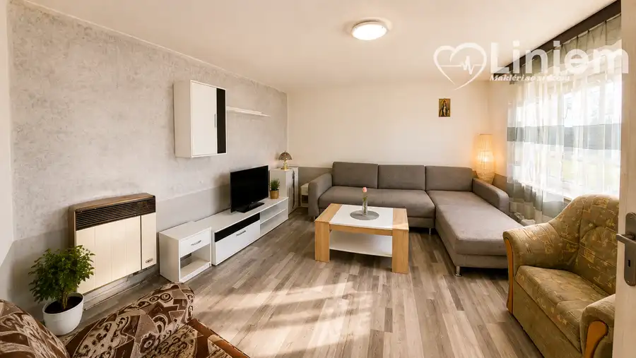
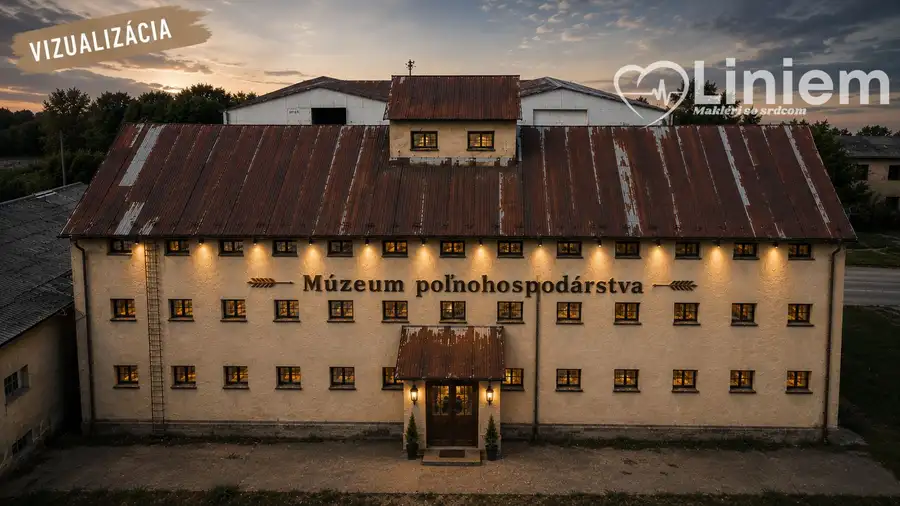
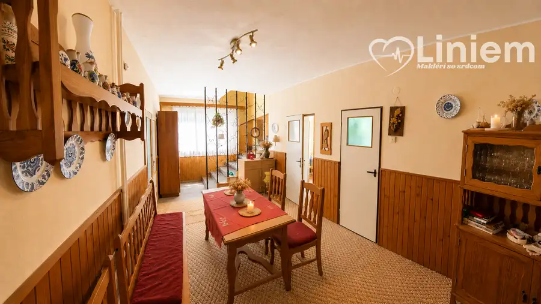
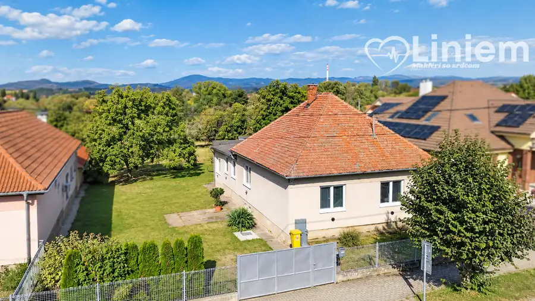

Postavené. Prežité. Pripravené pre vás. Cabaj-Čápor
Cabaj-Čápor




- Plocha117 m²
- StavČiastočná rekonštrukcia
- VlastníctvoOsobné
O nehnuteľnosti
Niekto ho postavil. Niekto v ňom niečo prežil. Teraz je pripravený na nových majiteľov.Len my vám v Cabaj-Čápore, kúsok od Nitry, ponúkame 3-izbový rodinný dom, ktorý stojí v strede svojho pozemku. Okolo neho sú dve záhrady, kde rastie vinič, ovocné stromy a kríky.Je to dom s dušou. V pôvodnom stave s čiastočnými úpravami, pripravený na rekonštrukciu podľa vlastných predstáv.Zastavaná plocha: 374 m²Pozemok: predná záhrada 447 m² a zadná, viac súkromná, 232 m²Mierne svahovitý pozemok s prístupom po spevnenej obecnej komunikáciiNa pozemku vlastná kopaná studňa a stará poctivá externá pivnicaSiete: voda, elektrina, plyn, kanalizácia.Cabaj-Čápor:Nie je to dedinka, kde nič nie je. Je to obec s cca 4 300 obyvateľmi. Má svoje časti - Cabaj, Čápor, Nový Cabaj, Pereš, Riegler, Hrúšťov, Fízeš a v obci nájdete škôlku, školu, lekára, zubára, gynekológa, lekáreň, potraviny, poštu, benzínku, ihriská, reštaurácie aj zberný dvor. Na bežný život nemusíte chodiť do Nitry.Možno práve vy napíšete jeho ďalšiu kapitolu.Rada vám ho ukážem osobne.Gabriela Mihalčinová0940 555 035mihalcinova@liniemreality.sk
Parametre
- Druh
- Rodinný dom
- Dátum zverejnenia
- 02. 09. 2026
- Plocha pozemku
- 1053 m²
- Počet izieb / miestností
- 3
- Rok výstavby
- 1950
- Stav nehnuteľnosti
- Čiastočná rekonštrukcia
- Terén pozemku
- Mierne svahovitý
- Typ
- Predaj
- Typ konštrukcie
- Tehlová
- Vlastníctvo
- Osobné
- Vybavenie
- Pivnica
- Vykurovanie
- Iné
- Zariadenie
- Čiastočne zariadené
- Zastavaná plocha
- 374 m²
- Úžitková plocha
- 117 m²
Kde to je


Mohlo by Vás zaujímať

DomNové 185 000 €Jedinečný industriálny priestor: Na predaj historická sýpka na bývanie i podnikanie Alekšince 984 m²
DomRezervované 347 500 €Na predaj dom,ktorý čaká na svoju novú rodinu Pezinok 758 m²
DomRezervované 193 000 €Kúpte si dom v ZM, bonus: susedia na nezaplatenie Zlaté Moravce 639 m²